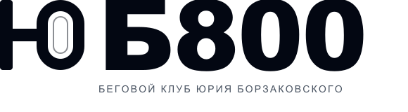
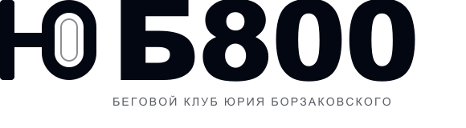
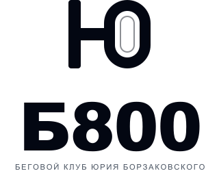
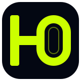
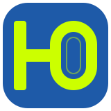
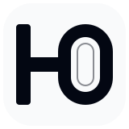

Бренд-борд · версия 1
ЮБ800
логотип
Знак «Ю» — это стартовая линия и овальная беговая дорожка. Слово продолжается «Б800», и вместе получается ЮБ800. Цвета: графит, бумага, #CCFF00 и дорожка #1E5AA8.
Основной логотип
Горизонтальная версия для сайта, документов и соцсетей. Фон — графит #030712.

Версии
Светлая, синяя и монохромные версии. Логотип не меняет пропорции и не перекрашивается вне палитры.





Компактная версия — для шапки и малых размеров. Вертикальная — для квадратных носителей, афиш и мерча.
Знак и иконка
Знак работает отдельно: аватар, favicon, нашивка, мерч. На малых размерах внутренняя линия дорожки исчезает — это нормально.



На светлом фоне знак и текст — графит #030712. Не используйте лайм на белом для текста.Цвета
Четыре цвета. #CCFF00 — только акцент: кнопки, линии, цифры. Дорожка #1E5AA8 — декоративный фон. Текст — бумага на графите.
#030712
Графит · основной фон
#F9FAFB
Бумага · текст
#CCFF00
Лайм · действия и акценты
#1E5AA8
Дорожка · декоративный фон
Типографика
Для логотипа — тяжёлый геометрический гротеск (Arial Black / аналог). Для текстов — системный гротеск. Словесная часть переведена в кривые, шрифт не нужен.
Правила
Минимум 18 единиц (ширина вертикальной стойки знака) вокруг логотипа. Ничего не заходит в это поле.
Полный горизонтальный — от 240 px. Компактный — от 120 px. Знак — от 24 px. Иконка — от 32 px. Ниже — только знак без подписи.
Не растягивать, не наклонять, не менять цвета, не добавлять тени и градиенты, не ставить на пёстрый фон без подложки.
Графит — основная версия. Светлый фон — графитовая версия. Синий фон — версия с белым текстом и лаймовым знаком.
Применение
Аватар и стартовый номер. Логотип не обязан быть везде крупным: знак работает сам.